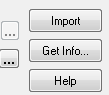
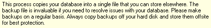
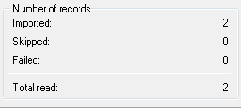
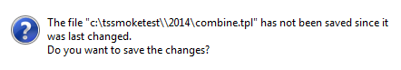
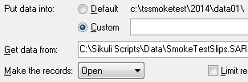

from sikuli import * import logging import mySettings import os import DBChecks timeslip = App(os.path.join(r"C:\tssmoketest", Settings.Version, "timeslip.exe")) tsimport = App(os.path.join(r"C:\tssmoketest", Settings.Version, "tsimport.exe")) # - - - - - - - - - - - - - - - - - - - - - - - - - # def import_slips(): # - - - - - - - - - - - - - - - - - - - - - - - - - # logging.debug(' ') logging.debug('Import_slips') # start timeslips logging.debug(' ') logging.debug('- Open Timeslips') timeslip.open() wait(Pattern().similar(0.89), 160) DBChecks.checkFor_Preferror() DBChecks.checkFor_BillingDate() DBChecks.checkFor_SPS() DBChecks.checkFor_PEP() wait(2) type('f', KeyModifier.ALT) wait(1) type('c') if not exists(Pattern().similar(0.84)): click() wait(Pattern().similar(0.84), 90) type('g', KeyModifier.ALT) paste(os.path.join(r'C:\Sikuli Scripts vm x','2015', 'Data', 'SmokeTestSlips.SAR')) wait(, 90) type(Key.TAB) type(Key.TAB) type(Key.TAB) type(Key.ENTER) wait(Pattern().similar(0.90), 30) type(Key.TAB) logging.debug(' ') logging.debug('- importing slips') type(Key.ENTER) wait(, 60) type(Key.TAB) type(Key.ENTER) waitVanish() # close tsimport logging.debug(' ') logging.debug('- close TsImport') type('f', KeyModifier.ALT) type('x') if exists(): type("n") waitVanish() # close Timeslips logging.debug('- close Timeslips') timeslip.close() #import_slips()